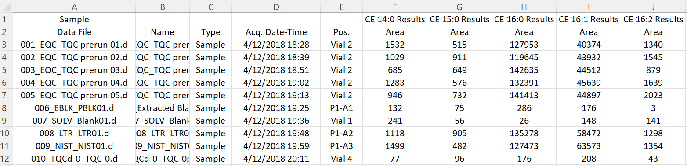
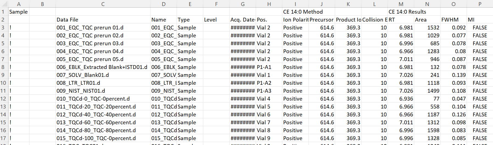

Pre-processed MS datasets refers to data exported from MS rawdata processing software, such as Agilent MassHunter, Sciex Multiquant, and open-source tools as MRMkit and Skyline. These datasets usually contain peak/signal intensities and associated data such as retention time, FWHM, as well as information about the sample.
The R package SLINGtools provided helper functions to import data files obtained from different tools.
Import peak areas from Agilent MassHunter CSV file

Reading 'Testdata_Lipidomics_MHQuant_Detailed_V2.csv' ...
indexing Testdata_Lipidomics_MHQuant_Detailed_V2.csv [======] 2.15GB/s, eta: 0s
Imported 215 samples with 428 transitions
# A tibble: 215 × 432
DataFileName AcqTimeStamp SampleType VialPosition `CE 14:0` `CE 15:0`
<chr> <dttm> <chr> <chr> <dbl> <dbl>
1 001_EQC_TQC … 2018-04-12 18:28:00 EQC Vial 2 1532 515
2 002_EQC_TQC … 2018-04-12 18:39:00 EQC Vial 2 1029 911
3 003_EQC_TQC … 2018-04-12 18:51:00 EQC Vial 2 685 649
4 004_EQC_TQC … 2018-04-12 19:02:00 EQC Vial 2 1283 576
5 005_EQC_TQC … 2018-04-12 19:13:00 EQC Vial 2 946 732
6 006_EBLK_Ext… 2018-04-12 19:25:00 PBLK P1-A1 132 75
7 007_SOLV_Bla… 2018-04-12 19:36:00 SBLK Vial 1 241 56
8 008_LTR_LTR0… 2018-04-12 19:48:00 LTR P1-A2 1118 905
9 009_NIST_NIS… 2018-04-12 19:59:00 NIST P1-A3 1499 482
10 010_TQCd-0_T… 2018-04-12 20:11:00 RQC Vial 4 77 96
# … with 205 more rows, and 426 more variables: `CE 16:0` <dbl>,
# `CE 16:1` <dbl>, `CE 16:2` <dbl>, `CE 17:0` <dbl>, `CE 17:1` <dbl>,
# `CE 18:0` <dbl>, `CE 18:1` <dbl>, `CE 18:1 d7 (ISTD)` <dbl>,
# `CE 18:2` <dbl>, `CE 18:3` <dbl>, `CE 20:1` <dbl>, `CE 20:2` <dbl>,
# `CE 20:3` <dbl>, `CE 20:4` <dbl>, `CE 20:5` <dbl>, `CE 22:0` <dbl>,
# `CE 22:1` <dbl>, `CE 22:4` <dbl>, `CE 22:5` <dbl>, `CE 22:6` <dbl>,
# `CE 24:4` <dbl>, `Cer d18:0/16:0` <dbl>, `Cer d18:0/18:0` <dbl>, …
Import all data from an Agilent MassHunter CSV file
Detail MassHunter Quant .

data_file_path <- here :: here ( "data/Testdata_Lipidomics_MHQuant_Detailed_V2.csv" )
d_all_long <- SLINGtools :: read_MassHunterCSV ( data_file_path )
Reading 'Testdata_Lipidomics_MHQuant_Detailed_V2.csv' ...
indexing Testdata_Lipidomics_MHQuant_Detailed_V2.csv [======] 2.15GB/s, eta: 0s
Imported 215 samples with 428 transitions
# A tibble: 92,020 × 14
DataFileName DataName SampleType AcqTimeStamp VialPosition Feature
<chr> <chr> <chr> <dttm> <chr> <chr>
1 001_EQC_TQC pre… 001_EQC… EQC 2018-04-12 18:28:00 Vial 2 CE 14:0
2 001_EQC_TQC pre… 001_EQC… EQC 2018-04-12 18:28:00 Vial 2 CE 15:0
3 001_EQC_TQC pre… 001_EQC… EQC 2018-04-12 18:28:00 Vial 2 CE 16:0
4 001_EQC_TQC pre… 001_EQC… EQC 2018-04-12 18:28:00 Vial 2 CE 16:1
5 001_EQC_TQC pre… 001_EQC… EQC 2018-04-12 18:28:00 Vial 2 CE 16:2
6 001_EQC_TQC pre… 001_EQC… EQC 2018-04-12 18:28:00 Vial 2 CE 17:0
7 001_EQC_TQC pre… 001_EQC… EQC 2018-04-12 18:28:00 Vial 2 CE 17:1
8 001_EQC_TQC pre… 001_EQC… EQC 2018-04-12 18:28:00 Vial 2 CE 18:0
9 001_EQC_TQC pre… 001_EQC… EQC 2018-04-12 18:28:00 Vial 2 CE 18:1
10 001_EQC_TQC pre… 001_EQC… EQC 2018-04-12 18:28:00 Vial 2 CE 18:…
# … with 92,010 more rows, and 8 more variables: IonPolarity <fct>,
# PrecursorMZ <dbl>, ProductMZ <dbl>, CollisionEnergy <dbl>, RT <dbl>,
# Area <dbl>, FWHM <dbl>, MI <lgl>